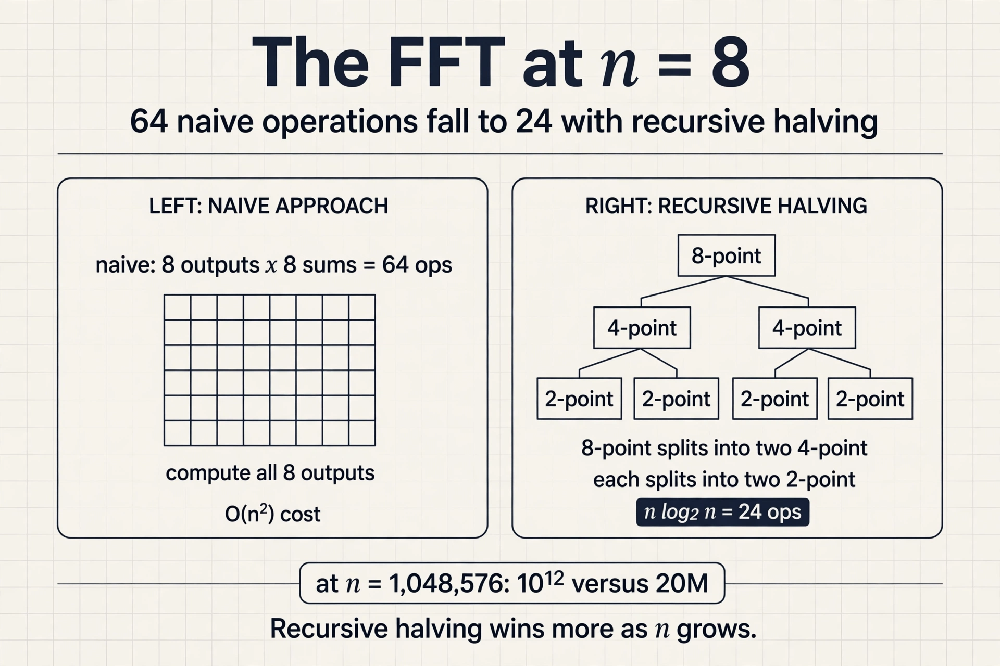
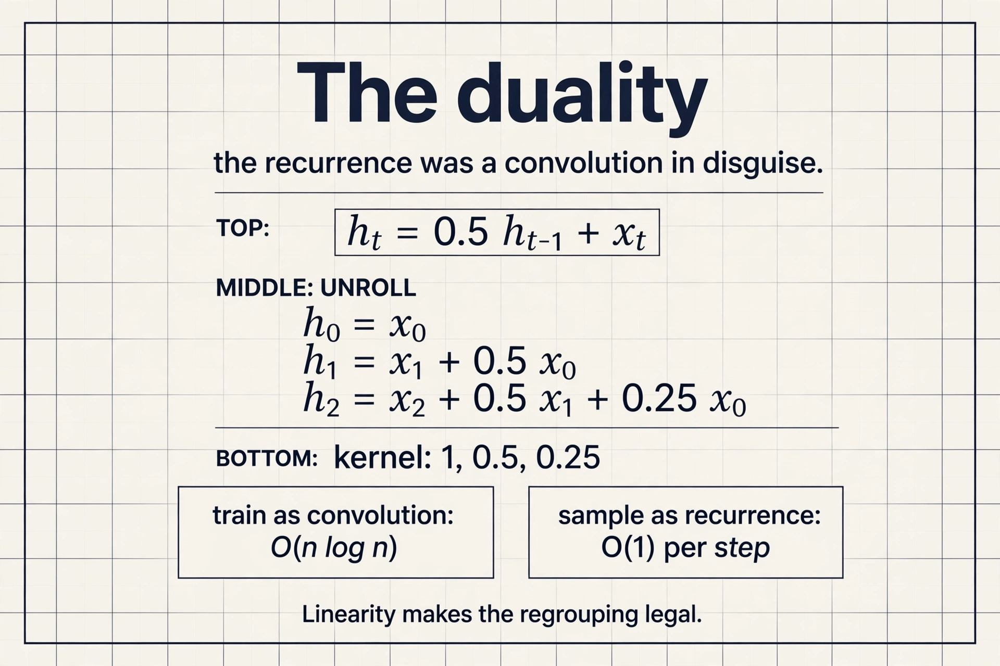
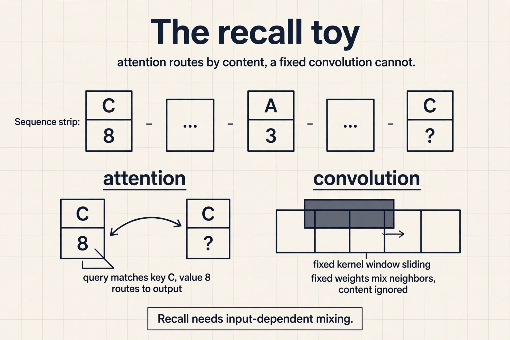
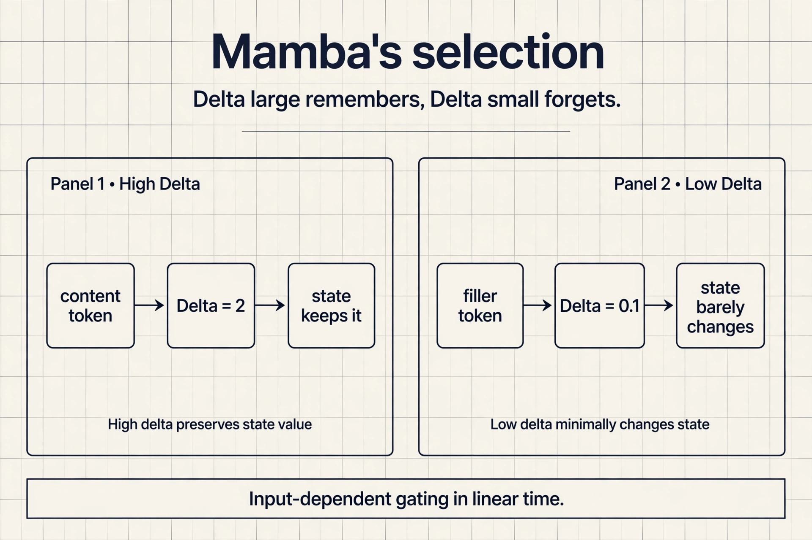

Lecture 9: Efficient Attention-Free Architectures
The problem: the quadratic is still there
FlashAttention made attention exact and fast, but the compute is still O(N squared). The lecture’s long-sequence cases have not gone away: hundreds of thousands of words in a math textbook with dependencies across chapters, raw audio at thousands of timesteps per second, genomes with interactions spanning 100k+ nucleotides. Can we design architectures that scale sub-quadratically in sequence length?
Two older primitives
Before answering, the lecture rebuilds the two sequence primitives that predate the transformer, because the new architectures are built from them.
A convolution mixes the input sequence according to weights in a filter vector called the kernel: each output is a dot product of the kernel against a window of the input. The kernel chooses the mixing. An edge-detector kernel [-1, 2, -1] responds to changes. An identity kernel [1, 0, 0] passes the signal through.
input : ... x0 x1 x2 x3 x4 ... kernel : [-1, 2, -1] <- edge detector output : ... y1 y2 y3 ... y2 = -x1 + 2*x2 - x3 <- dot product at each position
A long convolution sets kernel size equal to input size: every output sees the whole sequence. Two details matter. The Fourier transform is circular, built from periodic sines and cosines, so naive long convolution wraps samples around the ends: what falls off one end reappears at the other. For causal modeling, where early tokens cannot see later ones, pad with kernel_size - 1 zeros.
A recurrent network captures the history of all previously seen tokens in a fixed-size state: a state update equation and an output equation. Inference costs O(1) memory and O(1) compute per step, because the state is fixed size no matter how long the sequence gets.

But Lecture 2 named the three recurrent challenges: long-range dependencies fade, gradients vanish or explode, and training serializes across timesteps.
Each primitive, priced:
| Family | Training | Sampling | Context |
|---|---|---|---|
| Recurrent nets | Slow (serial) | Fast, O(1) per step | Potentially infinite |
| ConvNets | Fast (parallel) | Slow | Finite |
| Transformers | Fast (parallel) | Slow, O(N) look-back | Finite |
The key question
A naive long convolution costs O(N squared): N outputs, each a dot product of N terms. If attention is also O(N squared), why bother with convolutions? The answer is a theorem.
The FFT convolution theorem
Convolution in the time domain equals pointwise multiplication in the frequency domain. Three steps:
- Fourier-transform the input x and the kernel k.
- Multiply pointwise: O(N).
- Inverse-transform back.

A naive Fourier transform is itself O(n squared): n outputs, each a sum of n terms. The Cooley-Tukey Fast Fourier Transform (1965) computes it in O(n log n). Total: n^2 becomes O(n log n).

Subchapter: the FFT, worked on n = 8
A naive Fourier transform at n = 8: 8 outputs, each a sum of 8 terms, 64 operations. Cooley-Tukey splits the 8-point transform into two 4-point transforms plus 8 butterfly combines: 2 x 16 + 8 = 40, then the 4-point transforms split again, down to n log2 n = 24 operations. The trick is recursive halving: even and odd samples separate, the transform runs on each half, and the halves recombine with twiddle factors.
At n = 1,048,576 the gap is the point: naive needs 10^12 operations, Cooley-Tukey needs 20M. Every log factor the problem grows, the FFT wins by more.

The FFT is the core primitive that makes convolution-based sequence models fast. It is exact, not approximate: the theorem is an equality. Attention has no such exact speedup. Its only exact fix was the systems engineering of FlashAttention.
Linear recurrences are convolutions
Now the recurrence’s training problem. If the state update f() has nonlinearities, timesteps depend on each other sequentially. But if f() is linear (and time invariant), the computation parallelizes across the sequence (Martin and Cundy, 2018). Regrouping the terms shows why: a linear time-invariant recurrence unrolls into a convolution of the input with a kernel derived from the recurrence weights. Train it as a convolution (fast, parallel, FFT), run it as a recurrence (fast, O(1) sampling). That duality is the whole trick behind S4.
S4 (Gu et al., 2022) generalizes linear time-invariant recurrences with structured state spaces. The efficient transformers had struggled on the Long Range Arena (Tay et al., 2020), the standard long-context suite. In 2022, S4 solved those failure tasks to near-perfect accuracy, including Path-X. It also reached state of the art on audio generation and time-series modeling. Sub-quadratic sequence modeling had its breakthrough.
Subchapter: the duality, worked
Recurrence: h_t = 0.5 h_{t-1} + x_t. Unroll it: h_0 = x_0, h_1 = x_1 + 0.5 x_0, h_2 = x_2 + 0.5 x_1 + 0.25 x_0. Every output is a dot product of the input with a kernel of decaying powers: [1, 0.5, 0.25, …]. The recurrence was a convolution in disguise; the recurrence weights chose the kernel.
Train with the FFT as a convolution: all timesteps in parallel, O(n log n). Sample as the recurrence: one state update per step, O(1). The duality is exact because the recurrence is linear: no nonlinearity couples the timesteps, so regrouping the terms is legal. Add a nonlinearity and the disguise fails; training serializes again.

Where it breaks: language
Applied to language modeling, gaps remained. At 360M parameters on the same 10B Pile tokens, same infrastructure, same data order:

Attention (Llama-style) reached 8.39 perplexity. GPT-2 style reached 8.97. The state space model (SSM) variants sat between 9.79 and 13.13. Something about language resisted the convolutional answer.
The key question, again
What does language need that long convolutions lack? Zoology (Arora, Eyuboglu et al., 2023) diagnosed it with a behavior called recall: grounding the next prediction in information from the context. Synthetic form: given mappings like “C 8” and “A 3” earlier in the sequence, predict the value for a recall key. Real form: “A door panel blew off a 737 Max 9 during an Alaska Airlines flight” requires “Max” and “Airlines” to interact across distance.
Compare the sequence mixers: each takes input embeddings and outputs a mixed sequence, i.e. applies a mixing matrix. The attention mixing matrix is input-dependent: the queries and keys that produce it are functions of the input x, so the mixing adapts to content. The attention-free mixing matrix is diagonal-constant: fixed, independent of the input. Recall needs a fully flexible mixing matrix, and only the input-dependent one qualifies.

Subchapter: the recall toy, worked
Sequence: “C 8 … A 3 … what is the value of C?” Attention answers it: the query built from “C?” matches the key built from “C” at position 1, the mixing matrix puts weight 1 on position 1, and the value 8 routes to the output. The routing decision depends on the content: the query and key are functions of the input tokens.
A convolution cannot do this. Its mixing matrix is diagonal-constant: position i always mixes position i - k with weight w_k, whatever the tokens say. No fixed pattern of weights can route “the value that followed the recalled key” for arbitrary keys. The failure is structural, not a matter of more parameters.

The lecture’s two conclusions. First, measure efficiency on the task, not just the sequence length: convolutions are O(N log N) but attention is more efficient at recall. Second, do error analysis on your architectures: the gated convolutions’ recall failure was found by looking at what they predicted wrong, not by staring at complexity bounds.
Building the new architectures
The design target is now explicit: (1) computational and memory efficiency, sub-quadratic in sequence length, and (2) input-dependent sequence mixing, for recall. Mamba (Gu and Dao, 2023) makes the state-space parameters selective, i.e. input dependent. Gated linear attention and Based push the same direction from the linear-attention side. Keep the sub-quadratic scaling, and make the mixing depend on the input.
Subchapter: Mamba’s selection, worked
In S4 the recurrence h_t = A h_{t-1} + B x_t uses fixed A and B: the state decays and absorbs at the same rate for every token. Mamba makes the step size Delta, the input matrix B, and the output matrix C functions of the input token.
The worked meaning: Delta = 2 means the state keeps almost everything from this token (remember it); Delta = 0.1 means the state barely updates (forget it). The model learns to set Delta large on content tokens and small on filler. Selectivity is the input-dependent gate the recall diagnosis demanded, and the recurrence still runs in linear time with O(1) state per step.
Mamba-2 (Dao and Gu, 2024) added state-space duality: the selective SSM computes the same operation as a restricted linear attention, so its kernels reuse the matrix-multiply hardware GPUs are built for. Same idea, faster execution.

What is used where: real models, 2026
Pure transformers still dominate, but selective state-space layers are shipping in production. Facts as of October 2026, from public releases and the Mamba project’s adoption list.
| Model | Architecture | Source |
|---|---|---|
| AI21 Jamba (398B) | Mamba + attention hybrid | public |
| NVIDIA Nemotron-H (8B, 47B, 56B) | Mamba-2 + attention + MoE hybrid | public |
| TII Falcon-H1 (34B) | Mamba-2 hybrid | public |
| IBM Granite 4.0 | Mamba-2 + transformer, 9:1 ratio | public, Apache 2.0 |
| IBM Bamba (9B) | SSM + transformer | public |
| TII Falcon-Mamba (7B) | pure Mamba | public |
| Mistral Codestral Mamba (7B) | pure Mamba | public |
| Microsoft Samba (4B) | Mamba + sliding-window attention | public |
| Tencent Hunyuan-TurboS (560B) | hybrid | public |
The 2026 pattern: hybrids won. Builders use recurrent state-space layers for cheap long-sequence processing and keep attention where direct token access matters. Pure Mamba models exist (Falcon-Mamba, Codestral Mamba), but the production default is the mix. Frontier-lab internals beyond these releases are not public.
Mapping back: each primitive answers one pain
| Pain | Primitive that answers it |
|---|---|
| Training must be parallel | Long convolutions via the FFT: O(n log n), exact |
| Sampling must be cheap | Linear recurrences: O(1) memory and compute per step |
| Language needs content lookup | Input-dependent mixing: selective state spaces, gated linear attention |
The honest price
The lecture closes with three open jobs, and they are all legwork. First, the same tuning that trained transformers well (width, depth, hyperparameters) must be repeated for the new models. Second, the new primitives (FFT, parallel scans) need the efficient implementations that transformers already enjoy. Third, keep measuring behavior, not just complexity: modalities beyond language are still open country. Six years of transformer tuning do not transfer for free.
Because the FFT convolution theorem turns it into O(N log N). Transform both signals to the frequency domain with the Cooley-Tukey FFT, multiply pointwise, transform back. Attention has no such exact speedup: its only exact fix is the systems engineering of FlashAttention. The convolution’s structure admits a faster algorithm. The Fourier transform is circular, so samples wrap around the ends and early outputs see late inputs. For autoregressive modeling that leaks the future. Pad with kernel_size - 1 zeros to restore causality.
Only if it is linear and time invariant. Then regrouping the terms shows the unrolled recurrence is a convolution of the input with a kernel derived from the recurrence weights. Train it as a convolution with the FFT, run it as a recurrence for O(1) sampling. Nonlinear recurrences keep the serial dependency and cannot use this trick. It solved the Long Range Arena failure tasks to near-perfect accuracy including Path-X, and reached state of the art on audio generation and time-series modeling. It was the first sub-quadratic architecture to beat efficient transformers where they were weakest: very long contexts.
Recall needs the mixing between tokens to depend on the content: which earlier token matters depends on what the tokens say. Attention’s mixing matrix is built from input-dependent queries and keys, so it adapts per example. A convolution’s mixing matrix is diagonal-constant, fixed regardless of input. No fixed mixing pattern can route arbitrary content-based lookups, so perplexity gaps persist even though convolutions scale better asymptotically. Keep the sub-quadratic scaling but make the mixing input-dependent. That is exactly Mamba’s selective state spaces and gated linear attention: the recurrence or convolution weights become functions of the input, recovering the flexibility that recall needs while keeping linear-time scaling.
Input [1, 2, 3, 4], kernel [1, 1]: naive time-domain convolution computes each output as a dot product, O(n^2). The theorem: transform both signals to the frequency domain with the FFT (O(n log n) each), multiply pointwise (O(n)), inverse-transform back (O(n log n)). The result equals the naive convolution exactly: it is a theorem, not an approximation. The speedup comes from the structure of convolution, which attention lacks. Because the theorem is an equality about what convolution means in frequency space, not a numerical shortcut. Every step (FFT, pointwise multiply, inverse FFT) is exact arithmetic up to floating-point rounding. Sparsity and low-rank methods trade accuracy for speed; the FFT does not.
Because selectivity makes the mixing input-dependent. In Mamba, Delta, B, and C are functions of the current token: the model sets Delta large on the token it must remember later and small on filler. The state update then routes content the way attention’s query-key matching does, while staying a linear recurrence. Zoology’s diagnosis was that recall needs input-dependent mixing; selectivity is the SSM version of it. Because the state stays fixed-size: selectivity changes which information enters the state, not the state’s size. Attention’s cost comes from comparing every token against every past token; the selective recurrence updates one fixed state per step. Content-dependent routing without the pairwise matrix.
h_0 = x_0. h_1 = x_1 + 0.5 x_0. h_2 = x_2 + 0.5 x_1 + 0.25 x_0. The kernel is [1, 0.5, 0.25]: powers of the decay 0.5. In general, h_t = a h_{t-1} + b x_t unrolls to the kernel [b, ab, a^2 b, …]. The recurrence’s weights chose the convolution’s kernel: that is the duality in one line. The tanh couples the timesteps nonlinearly, so regrouping the terms into a convolution is no longer legal. Training serializes across timesteps again: the exact failure mode of classical RNNs that the linear trick escapes.
Pure attention is out: the KV cache at 1M tokens is terabytes, and prefill is quadratic. S4 trains and samples cheaply but its fixed mixing fails content lookup, so any task needing recall from the context breaks. Mamba (or a hybrid) is the pick: linear-time scaling, O(1) state per step, and selective mixing that handles recall. For exact copying or citation over the full 1M, add a few attention layers: that is why production hybrids (Jamba, Nemotron-H, Granite 4.0) exist. The design answer prices each option in the two currencies that matter: memory and recall. Yes. SSMs compress history into a fixed state and can lose fine-grained detail; transformers keep every token addressable. For verbatim citation, keep attention (possibly with retrieval over the context) and pay the memory cost, or use a hybrid weighted toward attention. Match the architecture to the task’s hardest demand.
Recap: the whole lesson on one screen
The story in eight steps. Each step answers the one before it.
- The quadratic is still there. FlashAttention is exact but O(N squared) in compute. Books, audio, and genomes need sub-quadratic.
- Two older primitives. Convolutions mix by kernel ([-1, 2, -1] detects edges); recurrences keep a fixed-size state with O(1) sampling. Each has a price.
- Why bother with O(N squared) convolutions? The key question: attention is quadratic too.
- The FFT theorem answers. Time-domain convolution equals frequency-domain pointwise multiplication. Cooley-Tukey (1965) makes it O(n log n). Exact.
- Linear recurrences are convolutions. Unroll and regroup: train parallel as a convolution, sample recurrent in O(1). S4 solved Long-Range Arena and Path-X.
- Language resisted. At 360M scale: attention 8.39 perplexity versus 9.79 to 13.13 for SSM variants. Something was missing.
- Recall needs input-dependent mixing. Attention adapts its mixing matrix to content; convolutional mixing is diagonal-constant. Content lookup needs the former.
- Sub-quadratic plus selective. Mamba, gated linear attention, Based: keep linear scaling, make mixing input-dependent. Measure task efficiency, not asymptotics.
Official sources and further reading
Official: - Designing Efficient Architectures slide deck (Fall 2023 headers).
Further reading: - Gu et al., “Efficiently Modeling Long Sequences with Structured State Spaces” (2022): S4. - Arora, Eyuboglu et al., “Zoology” (2023): the recall diagnosis. - Gu and Dao, “Mamba” (2023): selective state spaces.
Caveats from these sources. The perplexity table is one controlled comparison (360M params, 10B Pile tokens, same infrastructure); rankings shift with scale and data. The RNN/ConvNet/Transformer tradeoff table simplifies: modern hybrids blur every column. The FFT causality discussion assumes the circular transform; implementations vary in padding convention.
Go deeper
- Mamba explained: selective state spaces from zero: https://www.youtube.com/watch?v=9dSkvxS2EB0
- Mamba and state space models visual guide: https://www.youtube.com/watch?v=8Q_tqwpTpVU
- S4: Efficiently Modeling Long Sequences with Structured State Spaces: https://arxiv.org/abs/2111.00396
- Mamba: Linear-Time Sequence Modeling with Selective State Spaces: https://arxiv.org/abs/2312.00752
- Zoology: Measuring and Improving Recall in Efficient Language Models: https://arxiv.org/abs/2312.05482
- Where Mamba is used today (2026 survey): https://www.turingpost.com/p/mamba
Connections to the other courses
- CS336 L04: linear attention and MoE: the architecture the kernel idea became.
- CS229S L02: the RNN challenges that motivated transformers; this lecture revisits them.
- CS229S L06: the other answer to O(N squared): exact attention done right.
- CS229S L05: FFT and parallel scans as new primitives needing efficient kernels.
Sources
- SLIDESDesigning Efficient Architectures slide deck (Fall 2023 headers)
- PAPERGu et al., Efficiently Modeling Long Sequences with Structured State Spaces (S4, 2022)
- PAPERArora, Eyuboglu et al., Zoology: Measuring and Improving Recall in Efficient Language Models (2023)
- PAPERGu and Dao, Mamba: Linear-Time Sequence Modeling with Selective State Spaces (2023)
- PAPERArora, Eyuboglu, Zhang et al., Simple linear attention language models balance the recall-throughput tradeoff (2024)